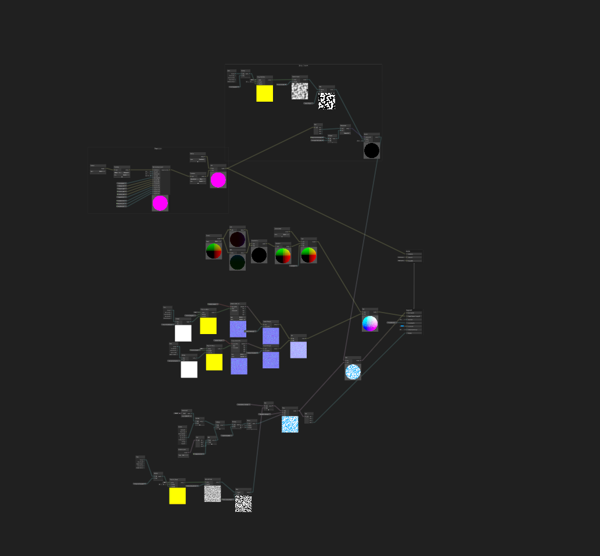

Realistic Rain Tool UE5.5
Description
Hi everyone, a little about this tool, this is an All-In-One rain tool that I made as a personal project in Unreal Engine 5.5. The goal of this project was to really test my shader knowledge as well as application of toolsets to be able to produce a product that was not only professional, while having the customizability to help enhance a wide variety of environments. This is an in-depth breakdown, a real showcase of the power of this is available on my Art Station:
Overview
In this read we will be splitting the tool up into 2 main sections and multiple sub-sections and cover all the bases
Rain Master Material
- Rain Drops
- Rain Drips
- Rain Puddles and Wind
- Rain Wetness
Master Blueprint
- Rain VFX/Splash Effects
- Rain Presets
- Dynamic Weather Changing
Rain Drops


What I Learned
Optimization is KING: As much as these Trochoidal wave algorithms are fantastic for making realistic simulations, they are not cheap to produce. The more waves you add to try to extend the illusion of realism, the time complexity of the algorithm becomes more exhausting on the hardware. This was especially difficult when trying to do those computations parallel across the CPU (Buoyancy) and GPU (Wave Shader). Learning to optimize through the use of compute shaders or using more efficient algorithms to take care of the calculations, such as Fast Fourier Transform (FFT), will benefit my overall workflow and make my projects more performant.Keep Tinkering: Find the values that work. Don’t settle for mediocre if there is always room for improvement, whether that be with performance, the visual look, or even just the feel of a shader. I spent many hours tinkering with the values to find something that I was happy with. To be completely honest, I could mess with it for many more hours to find the exact right color or steepness to the foam, there is so much freedom, there is no reason not to take your time to make it right.Use Your Resources/Don’t be Afraid to Ask Questions: This project I struggled with a bunch of new concepts from dynamically calculating normals to working with raw math in Shader Graph. Every tough task that I faced I overcame, how did I do it? I didn’t let my ego get to me and allowed myself to be vulnerable to finding help. I went to my Graphics professor (shoutout Eric Winebrenner), I went on google, forums, discord threads, talked to several peers and graduates for feedback and help. This helped me really understand what I was trying to accomplish from a foundational level and allowed me to get results that I could be happy with.